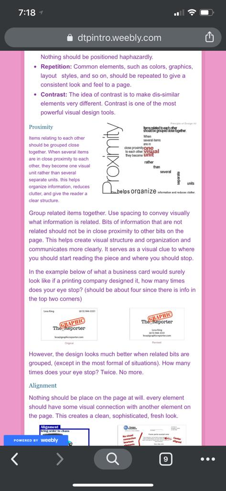
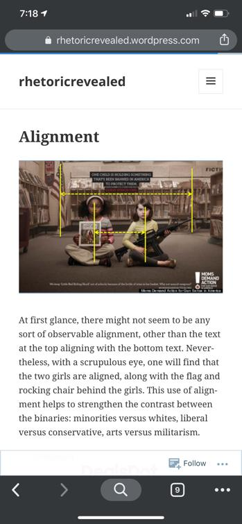
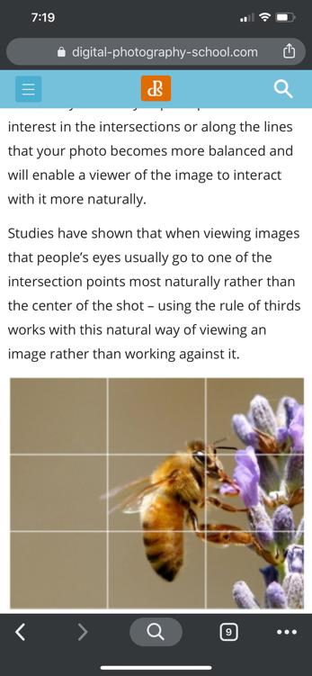

Gui Nascimento | Design Principles
Proximity
Proximity is used to group the links on the navigation bar
Items relating to each other should be grouped close together. When several items are in close proximity to each other, they become one visual unit rather than several separate units.
Group related items together. Use spacing to convey visually what information is related. Bits of information that are not related should not be in close proximity to other bits on the page.
Alignment
One will find that the two girls are aligned one after another
At first glance, there might not seem to be any sort of observable alignment, other than the text at the top aligning with the bottom text.
Nevertheless, with a scrupulous eye, one will find that the two girls are aligned, along with the flag and rocking chair behind the girls.
Rule of third
Okay, but what in the world does the Rule of Thirds mean?
The basic principle behind the rule of thirds is to imagine breaking an image down into thirds (both horizontally and vertically) so that you have 9 parts.
The theory is that if you place points of interest in the intersections or along the lines that your photo becomes more balanced and will enable a viewer of the image to interact with it more naturally.